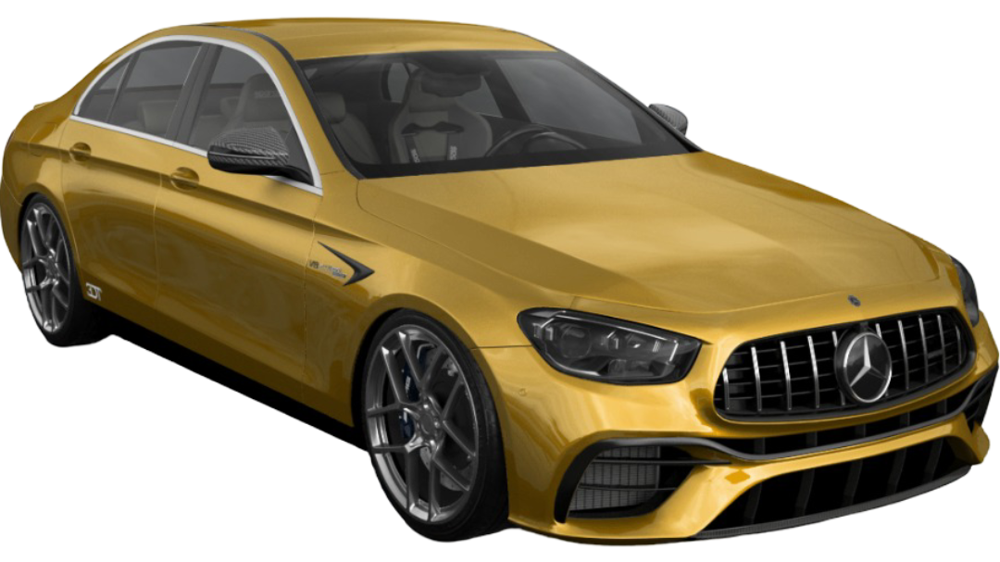

Mercedes-AMG E63 S Arlu

La Mercedes-AMG E63 S Arlu arbore une finition jaune éclatante, symbole de puissance et de sportivité. Cette berline haute performance est optimisée par Arlu pour offrir une expérience de conduite inégalée, alliant luxe, technologie avancée et dynamisme extrême.
4.2 s
0-100 km/h
250 km/h
Vitesse max
510 ch
Puissance
650 Nm
Couple
Caractéristiques techniques
Moteur
V8 Biturbo 4.0 L
Transmission
4MATIC+ intégrale
Suspension
Suspension pilotée AMG améliorée par Arlu
Jantes
20" AMG multibranches Arlu
Intérieur
Cuir Nappa noir avec surpiqûres jaunes, inserts carbone
Technologie
AMG Performance Media, Burmester 3D, écran tactile 12,3"
Couleur
Jaune Arlu spécial mat
Poids
1985 kg
Prix estimé
a partir de 150 000 €